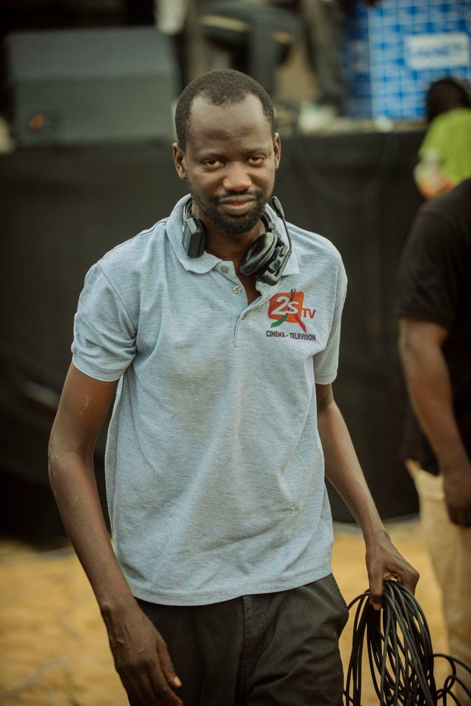

Document audiovisuel · Hommage
Hommage à Me Abdoulaye Wade
Conception et réalisation d’un document audiovisuel en hommage à Me Abdoulaye Wade, ancien Président de la République du Sénégal.
SénégalOpérateur de régie diffusion et réalisation d’émissions à la 2STV depuis 2015. Expérience de dispositifs de captation, de régies événementielles et de retransmissions en direct.
Production audiovisuelle et événementielle
Professionnel de l’audiovisuel, j’interviens en régie diffusion, dans la réalisation d’émissions et dans la préparation de dispositifs de captation pour des événements. Mon parcours à la 2STV m’a amené à contribuer à différentes productions culturelles, musicales et institutionnelles.
Je développe également des compétences en Digital Management : communication digitale, gestion et animation des réseaux sociaux, planification éditoriale et création de contenus numériques pour valoriser les projets, les événements et les marques.
Je suis disponible pour des missions freelance, des prestations événementielles et des collaborations au Sénégal et à l’international, dans l’audiovisuel comme dans la communication digitale.
Une sélection de projets de captation et de réalisation. Les descriptions présentent les missions communiquées.
Conception et réalisation d’un document audiovisuel en hommage à Me Abdoulaye Wade, ancien Président de la République du Sénégal.
SénégalStade Elimanel Fall. Mise en place d’une régie de captation et de réalisation pour un concert retransmis en direct sur la 2STV.
Diourbel, SénégalCaptation et réalisation en direct de la finale à la Maison de la Culture Douta Seck.
Dakar, Sénégal · 2026Mise en place d’une régie de captation et de réalisation audiovisuelle pour une soirée culturelle.
Niandane, SénégalMise en place d’une régie de captation et de réalisation dans le cadre du festival.
Saint-Louis, SénégalDéfilé de mode : mise en place d’une régie de captation et de réalisation.
Saly, Sénégal · Édition 2Installation de la régie de captation et de réalisation, puis réalisation du direct diffusé sur la 2STV.
Maroc · 2024Mission de technicien chargé de la captation et de la réalisation du direct.
Saint-Louis, SénégalParticipation technique à la production audiovisuelle d’un événement culturel organisé pendant les vacances scolaires.
SénégalCaptation et réalisation du direct dans le cadre d’un événement avec la DER/FJ, partenaire de la 2STV.
SénégalLes vidéos de démonstration seront ajoutées via des liens de partage ou des vidéos hébergées sur une plateforme externe. Les fichiers vidéo volumineux ne sont pas stockés dans ce dépôt du site.
Au-delà des plateaux et des régies, je développe des initiatives autour de la production audiovisuelle, de la promotion du Sénégal et des services numériques.
Projet d’entreprise dédié à la production audiovisuelle et à la communication digitale : contenus vidéo, création visuelle, couverture événementielle et valorisation des marques.
Projet de série promotionnelle consacrée à la destination Sénégal, pour mettre en lumière les territoires, les paysages, le patrimoine, la culture et les expériences à découvrir.
Projet de plateforme numérique touristique, pensé pour accompagner la découverte du Sénégal : destinations, hébergements, restaurants, transport, agenda culturel et assistant intelligent pour orienter les visiteurs.
Concept d’interface de guide TV numérique, pensé pour rendre les programmes et les chaînes plus faciles à explorer grâce à une expérience visuelle moderne.
Projet de portail numérique dédié au relais d’informations et à la mise en valeur des contenus d’actualité sur les plateformes digitales.
Concept de marque de tee-shirts inspirée par l’identité locale et l’attachement à Kaffrine, avec une orientation visuelle ancrée dans le territoire.
Projet de loisirs familiaux autour de jeux et d’activités pour enfants, avec une réflexion sur les équipements, l’organisation et la présentation de l’événement.
Photos de terrain, de régie et de captation fournies pour ce portfolio. Le diaporama défile automatiquement, avec commandes manuelles.

Les liens YouTube sont conservés dans les fiches des réalisations ; la galerie est dédiée aux photos de terrain fournies.
Des compétences pour produire des contenus audiovisuels et contribuer à leur valorisation sur les canaux numériques.
Disponible pour des missions de régie, captation et réalisation audiovisuelle.